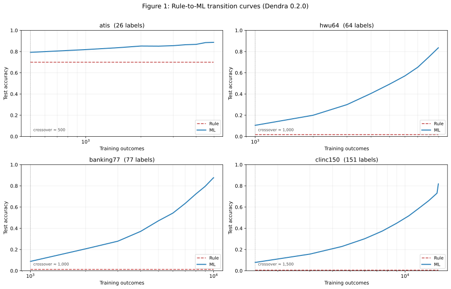

The classification primitive every production codebase is missing.
When should your rule learn? Dendra's six-phase graduated-autonomy primitive answers it with a p-value — and a safety floor that survives jailbreaks, silent ML failures, and unbounded token bills.
Wrap your classifier. Ship outcomes. Graduate when evidence earns it.
from dendra import ml_switch, Phase, SwitchConfig
@ml_switch(
labels=["bug", "feature_request", "question"],
author="@triage:support",
config=SwitchConfig(phase=Phase.RULE),
)
def triage(ticket):
title = ticket.get("title", "").lower()
if "crash" in title:
return "bug"
if title.endswith("?"):
return "question"
return "feature_request"Zero behavior change on day one. Dendra logs every outcome. When your evidence crosses the statistical gate, advance the phase and the LLM or ML head takes over — with the rule always available as the safety floor.
Six phases. Five statistical gates. One rule floor.
Each phase has a fixed routing behavior. Advancement is permitted only when a paired-proportion McNemar test rejects the null hypothesis that the higher-tier classifier is no better than the current decision-maker.
-
RULEYour function decides.
-
LLM_SHADOWRule decides; LLM watches.
-
LLM_PRIMARYLLM decides; rule is fallback.
-
ML_SHADOWML trains from outcomes.
-
ML_WITH_FALLBACKML decides; rule is fallback.
-
ML_PRIMARYML decides; circuit breaker reverts to rule on anomaly. safety_critical=True refuses this phase at construction.
Why Dendra
Bounded risk
The rule is always the safety floor. A paired-proportion hypothesis test gates every phase transition. The probability that any graduation produces worse-than-rule behavior is bounded above by the test's Type-I error rate. Verified on four public benchmarks at p < 0.01.
Cut token cost
Route 80% through your rule. Pay LLM tokens on 20%. At 100M classifications/month with a Sonnet-class model, the LLM-only spend is $11.5M/yr. Dendra's Phase-4 routing drops this to essentially zero while preserving the LLM's judgment on hard cases.
Survives jailbreaks
20-pattern jailbreak corpus: 100% rule-floor preserved. Prompt injection cannot change what a compiled rule returns. The LLM runs in shadow. Safety-critical classifiers are capped at Phase 4 — no ML-primary for authorization decisions, ever.
Four public benchmarks. Transition depths measured at p < 0.01.

All four benchmarks measured, all four show ML overtaking the rule by the first checkpoint with statistical significance. Two regimes emerge: narrow-domain rules stay viable for years (ATIS, ~70% rule floor), high-cardinality rules are non-starters (CLINC150, 0.5% rule floor — you need Dendra's outcome log to ever ship ML at all).
Find the classifiers in your codebase. Free. 30 seconds.
dendra analyze ./my-repoRuns entirely locally. No upload. No signup. Walks your Python source, identifies classification decision points via six AST patterns, scores each for Dendra-fit, and outputs a JSON artifact for CI diff tracking.
$ dendra analyze ./my-repo Scanned 12,408 Python files; found 7 classification sites. src/support/triage.py:42 — 5 labels, medium cardinality Dendra-fit: 4.5/5 Regime: narrow-domain rule-viable (ATIS-like) Estimated: rule accuracy ~70%; ML would add ~15-20pp after ~500 outcomes src/mod/content_score.py:88 — 3 labels, binary-ish Dendra-fit: 4/5 Regime: safety-critical boundary Recommend: Phase 4 cap (ML_WITH_FALLBACK, never ML_PRIMARY) ... 5 more Report written to .dendra/analyze-2026-04-22.json
Volume-based pricing. No per-seat fees. Free forever for the library.
| Tier | Price | Classifications / mo |
|---|---|---|
| OSS library | Free | unlimited (self-hosted) |
| Free hosted | $0 | 10,000 |
| Solo | $19/mo | 100,000 |
| Team | $99/mo | 1,000,000 |
| Pro | $499/mo | 10,000,000 |
| Scale | $2,499/mo | 100,000,000 |
| Metered | $0.01 / 1k | above Scale |
| Enterprise | Custom | Custom |
Every paid tier has a published price. No "contact us" gating below Enterprise. Volume-priced so adding another classifier doesn't cost you another seat. Cancel anytime.
Where Dendra has measurable impact today
- Customer-support triage
- Chatbot intent routing
- LLM output moderation / PII filtering
- Fraud and anomaly triage
- SOC alert classification
- Content moderation
- Clinical coding (ICD-10, CPT)
- RAG retrieval-strategy selection
- Agent tool routing
Four more categories in the full list.
Your AI coding assistant already knows how to install Dendra.
Dendra ships a SKILL.md that Claude Code, Cursor, and Copilot Workspaces can load as context. Just ask:
"Add Dendra to the triage function in
src/support/triage.py."
Your assistant will wrap the function, add the import, infer the labels, and leave a minimal, reviewable diff.
dendra init src/support/triage.py:triage --author "@you:team"
dendra init is the deterministic CLI path
that skips the LLM's risk of hallucinating decorator
syntax. Your assistant should reach for it by default.